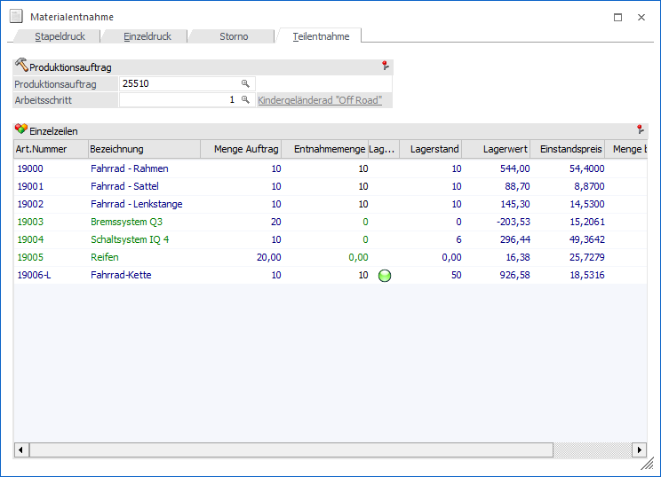
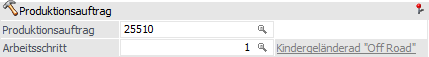
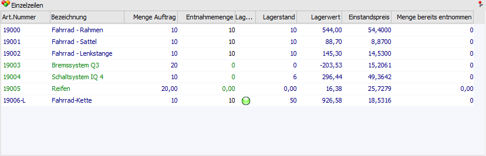
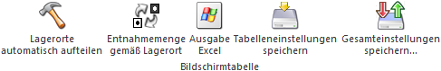

In dem Register "Teilentnahme" der Materialentnahme kann ein Materialentnahmeschein für einzelne Artikel (Komponenten) eines Arbeitsschritts gedruckt werden.
Achtung
Folgende Punkte sind bei einer Teilentnahme zu berücksichtigen:
ü Kennzeichen des getätigten
Originaldrucks
Das Kennzeichen des getätigten Originaldrucks wird bei einer
Teilentnahme nie gesetzt. D.h. auch wenn für alle Komponenten des gewählten
Arbeitsschritts ein Materialentnahmeschein erzeugt wurde und somit keine Mengen
für eine weitere Entnahme mehr zur Verfügung stehen, wird der Status des
gedruckten Materialscheins nicht gesetzt und somit auch nicht an anderen
Programmbereiche (z.B. an den Leitstand oder die Endmeldung)
weitergereicht.
Um das Kennzeichen des getätigten Originaldrucks zu erhalten,
muss der Materialentnahmeschein am Ende nochmals über das Register "Stapeldruck" oder "Einzeldruck" erstellt werden.
ü Stornieren von
Teilentnahmen
Materialentnahmescheine, die per Teilentnahme erzeugt wurden,
können nicht unmittelbar im Register "Storno" wieder storniert
werden.
Falls entsprechende Materialentnahme wieder rückgängig gemachte
werden sollen, dann muss die zu stornierende Menge im Minus in der Spalte
"Entnahmemenge" erfasst werden.

Folgende Eingabefelder, Einstellungen und Informationen stehen zur Verfügung:
Produktionsauftrag

Ø Produktionsauftrag
An dieser Stelle kann auf einen bestimmten Produktionsauftrag eingegrenzt werden. Aufgrund dieser Hinterlegung wird im nachfolgenden Feld "Arbeitsschritt" die offenen Arbeitsschritte dieses Auftrags zur Auswahl vorgeschlagen.
Ø Arbeitsschritt
An dieser Stelle kann auf einen Arbeitsschritt des zuvor ausgewählten Produktionsauftrags eingegrenzt werden. Die Komponenten dieses Arbeitsschritts werden in darunterliegenden der Tabelle angezeigt.
Tabelle "Einzelzeilen"

In der Tabelle werden die Artikel des zuvor ausgewählten Arbeitsschritts angezeigt. Dabei ist es nicht möglich Komponenten hinzuzufügen, zu löschen oder ähnliches. Einzig in der Spalte "Entnahmemenge" oder über die Lagerortkugel können Änderungen vorgenommen werden.
Ø Art.Nummer
An dieser Stelle wird die Artikelnummer des Artikels angezeigt.
Ø Artikelbezeichnung
In dieser Spalte wird die Artikelbezeichnung der Komponente angezeigt.
Ø Menge Auftrag
An dieser Stelle wird die gesamte benötigte Menge des Artikels laut Produktionsauftrag ausgewiesen.
Ø Entnahmemenge
In der Spalte "Entnahmemenge" wird die Menge eingegeben, welche vom Lager entnommen werden soll. Hierbei kann (in Summe) maximal die Anzahl aus der Spalte "Menge Auftrag" entnommen werden.
Achtung
Bei zu produzierenden Komponenten (Halbfertigprodukte) kann nur eine Menge eingetragen werden, wenn einer der beiden folgenden Punkte zutrifft:
ü bei dem Halbfertigprodukt ist die Option "Immer vom Lager" aktiviert
ü in den PPS-Parametern (Bereich "Buchungsschlüssel") ist die Option "Hilfsartikel ebenfalls abbuchen" aktiviert
Hinweis
Es wird an dieser Stelle immer die gesamte noch nicht entnommene Menge vorgeschlagen.
Beispiel
Für die Fertigung von 10 Fahrrädern werden 10 Fahrradrahmen benötigt. Nun werden im ersten Schritt 4 Rahmen vom Lager genommen (Entnahmemenge wird von 10 Stk. auf 4 Stk. geändert und der Materialentnahmeschein gedruckt).
Wenn der Produktionsauftrag, samt dem entsprechenden Arbeitsschritt, wieder im Register "Teilentnahme" aufgerufen wird, dann wird in der Spalte "Entnahmemenge" bei dem Rahmen nur noch 6 Stk. ausgewiesen.
Teilentnahme von Artikeln mit Ausprägungen
Es können Artikel im Register "Teilentnahme" über das Fenster "Ausprägungen erfassen" ausgeprägt werden. Hierbei sind folgende Punkte zu beachten:
ü Erfassen der Ausprägungen
Das
Fenster "Ausprägungen erfassen" öffnet sich, wenn das Feld "Entnahmemenge" für
den Hauptartikel aktiviert wird. Dies ist allerdings nur möglich, wenn der
Artikel noch nicht in der Produktionsvorbereitung bzw. -korrektur ausgeprägt
wurde. Nach Auswahl und Speichern der gewünschten Ausprägungen im Fenster
"Ausprägungen erfassen", werden die Ausprägungsartikel als eigene Zeilen unter
dem Hauptartikel in die Tabelle eingefügt. Diese Zeilen können nicht direkt in
der Tabelle bearbeitet werden, sondern nur über das Fenster "Ausprägungen
erfassen". Beim Hauptartikel ist das Mengenfeld ständig gesperrt. Die Menge vom
Hauptartikel ergibt sich immer aus den Ausprägungen.
ü Aufteilungsmenge
Im Fenster
Ausprägungen erfassen" wird die maximale Stückzahl (des Hauptartikels) geprüft.
Es ist nicht möglich mehr als die erforderliche noch offene Auftragsmenge zu
entnehmen. Eine "Überentnahme" (Entnahmemenge > Auftragsmenge) ist nicht
erlaubt.
ü Aufteilung bereits
vorhanden
Wurde in der Produktionskorrektur bzw. -vorbereitung ein
Ausprägungsartikel bereits aufgeteilt, kann der Artikel im Register
"Teilentnahme" nicht mehr ausprägt werden, d.h. das Fenster "Ausprägungen
erfassen" öffnet sich nicht. In diesem Fall kann die Entnahmemenge für die
einzelnen Ausprägungen direkt bearbeitet werden wie bei normalen Artikeln.
(Umgekehrt, sobald ein Artikel in der Teilentnahme ausgeprägt wurde, kann der
Artikel nicht mehr in der Produktionskorrektur geändert werden - Menge geändert,
Ausprägungen erfassen, usw.).
ü Stornierung von
Teilentnahmen
Genau wie oben beschrieben für normale Artikel werden
Teilentnahmen von Ausprägungsartikeln durch Eingabe einer negativen Menge
storniert (d.h. wurden 2 Stück von einem Chargenartikel teilentnommen; so wird
beim Storno eine Menge von -2 Stück für die Charge erfasst und anschließend der
Teilentnahmeschein gedruckt).
Es können nicht mehr Stück storniert
(Minusmenge) als ursprünglich teilentnommen. Wurde die Ausprägung erst bei der
Teilentnahme ausgewählt, kann nach der letzten stornierten Ausprägungszeile (von
diesem Ausprägungsartikel) diesen Artikel auch wieder in der
Produktionskorrektur ausgeprägt werden.
Ø Lagerort
In der Spalte "Lagerort" wird über den Status der Lagerorterfassung Auskunft gegeben:
ü  - Rot
- Rot
Die zu entnehmende Menge wurde
bisher nicht auf Lagerorte aufgeteilt.
ü  - Orange
- Orange
Ein Teil der zu entnehmende
Menge wurde nicht auf Lagerorte aufgeteilt.
ü  - Grün
- Grün
Die zu entnehmende Menge wurde
auf Lagerorte aufgeteilt.
ü  - Dunkelgrün
- Dunkelgrün
Es wurde auf einen Lagerort
mehr aufgeteilt, wie entnommen wird. Wenn die Aufteilung in solch einem Fall
über mehrere Orte stattgefunden hat, dann wird eine orange Kugel angezeigt.
Hinweis
Per Doppelklick auf das Kugel-Symbol kann das Fenster "Lagerorte erfassen" geöffnet werden.
Ø Lagerstand
In dieser Spalte wird der aktuelle Lagerstand des Artikels ausgewiesen.
Ø Lagerwert
An dieser Stelle wird der aktuelle Lagerwert des Artikels ausgewiesen.
Ø Einstandspreis
An dieser Stelle wird der Einstandspreis des Artikels angezeigt.
Ø Menge bereits entnommen
In dieser Spalte wird die bereits entnommene Menge angezeigt.
Tabellenbuttons

Ø Lagerorte automatisch aufteilen
Durch Anwahl des Buttons "Lagerorte automatisch aufteilen" wird bei allen Artikeln mit Lagerortstruktur eine automatische Aufteilung bzw. Zuweisung auf Lagerorte durchgeführt. Hierbei werden folgende Punkte berücksichtigt:
ü Die Aufteilung wird nur durchgeführt, wenn keine vollständige Zuweisung vorhanden ist (Lagerort-Kugel ungleich "grün").
ü Bei einer Aufteilung werden alle ggfs. bereits getätigten / vorhandenen Lagerorterfassungen zunächst initialisiert.
ü Bei der Aufteilung werden nur Lagerorten mit Bestand und der Lagerortfunktion "Produktionslager" berücksichtigt.
ü Sollte eine Lagerortvorgabe bzw. ein Lagerortvorschlag vorhanden sein, so wird dieses bei der Aufteilung berücksichtigt.
Ø Entnahmemenge gemäß Lagerort
Mit Hilfe dieses Buttons wird bei allen Artikeln mit Lagerortstruktur die Entnahmemenge auf jene Menge gesetzt, welche bereits Lagerorten zugeteilt wurden.
Ø Ausgabe Excel
Durch Anwahl des Buttons "Ausgabe Excel" wird der Inhalt der Tabelle an Microsoft Excel übergeben.
Ø Tabelleneinstellungen speichern
Die Spalten einer Tabelle können grundsätzlich an beliebige Positionen verschoben, bzw. in der Breite entsprechend angepasst werden. Durch Anwahl des Buttons "Tabelleneinstellungen speichern" werden die Einstellungen benutzerspezifisch gespeichert und bei dem nächsten Aufruf des Programmpunktes wieder vorgeschlagen.
Ø Gesamteinstellungen speichern…
Im Gegensatz zu "Tabelleneinstellungen speichern" können mit "Gesamteinstellungen speichern" mehrere Tabellenaufbauten gespeichert und nach Wunsch geladen werden. Zusätzlich werden Sonderfunktionen der Tabelle (z.B. "Spalte gruppieren") ebenfalls bei der Speicherung bedacht.
Buttons
Folgende Buttons stehen im Register "Einzeldruck" zur Verfügung:
Ø Ausgabe Bildschirm
Durch Anwahl des Buttons "Ausgabe Bildschirm" bzw. der Taste F5 wird der Materialentnahmeschein gemäß den getätigten Eingaben erstellt und am Bildschirm angezeigt.
Hinweis
Wenn mit Lagerabbuchung gearbeitet wird und zusätzlich lt. PPS-Parametern (Bereich "Parameter") eine Lagerstandsunterschreitung "1 - erlaubt mit Warnung" oder "2 - nicht erlaubt" ist, dann wird automatisch in das Register Fehlerliste gewechselt, sofern die Erzeugung des Materialscheins für den Arbeitsschritt nicht möglich war.
Achtung
Durch eine Ausgabe des Materialscheins am Bildschirm wird keine Lagerabbuchung durchgeführt und auch das Kennzeichen des getätigten Originaldrucks nicht gesetzt! Beides erfolgt nur bei der Ausgabe auf den Drucker.
Ø Ausgabe Drucker
Bei Anwahl dieses Buttons wird der Materialentnahmeschein gemäß den getätigten Eingaben erstellt und auf dem Drucker ausgegeben.
Hinweis
Wenn mit Lagerabbuchung gearbeitet wird und zusätzlich lt. PPS-Parametern (Bereich "Parameter") eine Lagerstandsunterschreitung "1 - erlaubt mit Warnung" oder "2 - nicht erlaubt" ist, dann wird automatisch in das Register Fehlerliste gewechselt, sofern die Erzeugung des Materialscheins für den Arbeitsschritt nicht möglich war.
Achtung
Durch eine Ausgabe des Materialscheins auf den Drucker wird (wenn aktiviert) eine Lagerabbuchung durchgeführt und auch das Kennzeichen des getätigten Originaldrucks gesetzt!
Ø Ende
Durch Anwahl des Buttons "Ende" bzw. der Taste ESC wird das Fenster geschlossen und keine Ausgabe durchgeführt.
Ø alle Artikel auf Menge 0 setzen
Mit Hilfe dieses Buttons wird die Entnahmemenge aller Zeilen auf 0 gesetzt.
Ø Voreinstellung speichern
Durch Anwahl dieses Buttons erfolgt eine benutzerspezifische Speicherung aller im Fenster getätigten Einstellungen. Diese sogenannten "Voreinstellungen" können jederzeit wieder abgerufen werden und ermöglichen dadurch ein schnelleres und zielorientierteres Arbeiten (nähere Informationen entnehmen Sie bitte dem Kapitel "Die Voreinstellungen").